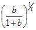
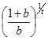
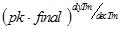

The BasicSynth Common library classes provide the signal generation and processing foundation for the synthesizer. Much of the implementation is contained in the header files located in the Include directory. The methods are typically short, and placing them in the header allows the compiler to optimally expand the code as inline functions. Longer functions, and those that are not time critical, are located in the Src/Common directory and compiled into the Common library as object modules.
The library classes are divided into the following groups.
General classes and functions include global parameter settings, wave table management, and base classes.
In addition to global classes, several types are defined for convenience and are used throughout the library. Some of these types can be redefined to trade-off performance against precision. For example, the AmpValue and FrqValue types can be redefined as double precision, or, can be implemented as fixed-point objects. Theoretically, the SampleValue type can be redefined to obtain 8-bit, 24-bit, or 32-bit sample output, but this has not been tested.
typedef short SampleValue; // sample output type
typedef char bsInt8; // signed 8 bit data type
typedef short bsInt16; // signed 16 bit data type
typedef int bsInt32 ; // signed 32 bit data type
typedef unsigned char bsUint8; // unsigned 8 bit data type
typedef unsigned short bsUint16; // unsigned 16 bit data type
typedef unsigned int bsUint32 ; // unsigned 32 bit data type
typedef void* Opaque; // Opaque pointer to anything
typedef double PhsAccum; // calculation of oscillator phase
typedef float AmpValue; // amplitude value
typedef float FrqValue; // frequency or time value
The SynthConfig class holds global information for the synthesizer. This includes sample rate, wave table size, phase increment calculation constants, and the tuning table for conversion of pitch to frequency. Exactly one instance of this class exists and is named synthParams. Library classes utilize this object rather than store sample rate and other parameters internally.
File:
SynthDefs.h
Methods:
void Init(bsInt32 sr = 44100, bsInt32 tl = 16384)
FrqValue GetFrequency(int pitch)
The Init method stores the sample rate and wave table length, then calculates the appropriate values for frequency to radians and frequency to table index conversion. The calculated values are public members of the SynthConfig class and can be accessed directly from anywhere within the library.
FrqValue sampleRate; // Global sample rate as frequency
bsInt32 isampleRate; // Sample rate as integer
AmpValue sampleScale; // multiplier to convert values to samples
PhsAccum frqRad; // multipler for frequency to radians
PhsAccum frqTI; // multipler for frequency to table index
PhsAccum radTI; // multipler for radians to table index
PhsAccum ftableLength; // wave table length
bsInt32 itableLength; // wave table length as integer
FrqValue tuning[128]; // table to convert pitch into frequency
The GetFrequency method converts a pitch in the range [0,128] into the equivalent frequency for the equal-tempered scale. Middle ‘C’ is at index 60. Code may also access the tuning value array directly if desired. The tuning table is calculated automatically in the constructor but can be overwritten in order to implement a different tuning system.
The WaveTableSet class holds a set of wave tables shared by all oscillators. There is one pre-defined global instance of the wave table class named wtSet.
File:
WaveTable.h
Methods:
void Init(bsInt32 wtUsr = 0)
int SetWaveTable(bsInt32 n,
bsInt32 nparts,
bsInt32 *mul,
double *amp,
double *phs,
int gibbs)
void DestroyTables()
The Init method initializes the default set of wave tables and pre-allocates space for additional user wavetables. The wtUsr argument indicates how many user defined tables are needed. Nine wavetables are defined automatically and can be referenced by the manifest constants declared in the WaveTable.h file.
WT_SIN Sine wave
WT_SAW Sawtooth wave
WT_SQR Square wave
WT_TRI Triangle wave
WT_PLS Narrow pulse wave
WT_SAWL Sawtooth wave for LFO
WT_SQRL Square wave for LFO
WT_TRIL Triangle wave for LFO
WT_SAWP Positive only sawtooth wave
WT_TRIP Positive only triangle wave
The first five wavetables (WT_SIN – WT_PLS) are calculated as a sum of sines and can be used safely for audio oscillators up to about 2kHz base frequency. Above that frequency alias foldover will occur. The tables with ‘L’ designation are calculated directly and thus not bandwidth limited. These are intended for use with LFO oscillators where a straight-line waveform is needed. The tables with ‘P’ designation are positive-only values and can be used for various amplitude and indexing functions where a negative value would be inappropriate (e.g. as a lookup value for another table). All wavetables have a peak amplitude of [-1,1] except for the positive-only tables, which have a peak amplitude of [0,1].
To access these wavetables, the public array member wtSet.wavSet[] is used with the selected wave table constant as an index into the array. User defined wavetables can be accessed using the WT_USER() macro to calculate the appropriate index. Code should check to insure the table has been initialized before generating samples. For performance, many of the built in oscillators only check at initialization and not during sample generation.
The SetWaveTable method is used to allocate additional wavetables. Tables are filled using a sum of sine waves calculation (i.e. inverse Fourier transform) with optional Gibbs phenomena correction. The n parameter identifies which of the user wavetables is to be filled. The nParts parameter indicates the number of partials to sum. The mul, amp, and phs parameters point to arrays that define the multiple, amplitude and initial phase for each partial. The amp parameter is required, but mul and phs may be NULL. In that case, the multiple is assumed to be an integer of the fundamental and the initial phase is assumed to be zero. The gibbs parameter, when true, causes the application of the Lanczos sigma value to correct for the Gibbs phenomena.
The DestroyTables method frees all memory associated with the wave table set. This should be followed immediately by a call to Init. Init will call this method automatically, thus it is not usually necessary to invoke DestroyTables directly. Obviously, this should be used carefully. Any oscillators that are holding references to the wavetables must be reset afterwords.
GenUnit is the base class for all other classes that generate or process samples. Derived classes must implement the Init, Reset, and Sample methods as these are defined as pure virtual functions.
File:
SynthDefs.h
Methods:
void Init(int count, float *values)
void Reset(float initPhs)
AmpValue Sample(AmpValue in)
void Samples(SampleBlock *block)
int IsFinished()
The Init method sets initial values for the object. The count argument indicates the number of values in the values array. This method provides an opaque mechanism for initializing unit generators. The caller can load values from a file or other source and pass them to the generator unit without interpretation. Most generator units will supply additional initialization and access methods where each value is passed as an explicit argument. The latter form of initialization is preferred as it allows for effective type and range checking.
The Reset method is called to force the generator unit to update any internal values that are dependent on properties or initial values and enter a known state. For example, an oscillator would calculate the phase increment based on the last set frequency value, while an envelope generator would calculate the slope of the initial segment.
The initPhs argument indicates the reset condition. The range varies based on the type of object. For an oscillator, phase has a range of [0,2π], while for an envelope generator, the phase might indicate a time in seconds. A value of 0 indicates the object should reset to a condition prior to any samples being generated. A value greater than 0 indicates a condition after some samples have been generated. A value of -1 indicates the object should apply any changed parameter values, but should not otherwise change the current phase. Not all generator units utilize the initPhs argument.
The Sample method is invoked to generate one sample. The value of the current sample is passed as an argument. Objects that modify the current sample (such as filters) can use the argument. Objects that generate new samples (such as oscillators and envelope generators) will typically ignore the argument.
The Samples method is invoked to generate a block of samples. The number of samples to generate is contained in the SampleBlock structure passed as an argument. The value of the current sample block is passed in the in buffer and the output sample block is returned in the out buffer.
IsFinished is called to determine when a generator has produced all the valid sample values it can produce. Oscillators are always considered “finished” and always return true. Envelope generators return true when the end of the envelope cycle is reached. Other generator units return true or false based on their individual requirements, but for the most part, should always return true.
Both synthParams and wtSet must be initialized before calling any other method in the library. This is easily accomplished by calling the InitSynthesizer function during program startup, but the methods on the synthParams and wtSet objects can be called directly if desired.
File:
SyntDefs.h
Function:
int InitSynthesizer(bsInt32 sampleRate = 44100,
bsInt32 wtLen = 16384,
bsInt32 wtUsr = 0)
InitSynthesizer invokes Init on the synthParams object, passing the sample rate (sampleRate) and wavetable length (wtLen) as arguments. It then invokes the wtSet object Init, passing the number of user wavetables as an argument (wtUsr).
The bsString class provides a holder for dynamic character strings. This class is used by various classes in the library. Although not a complete string class implementation, it provides the dynamic allocation, concatenation and comparison operators needed by other classes. The methods listed below show an argument of const char * only. Each such method or operator is also available with an argument of type bsString&.
File:
SynthString.h
Methods:
bsString(const char *)
size_t Length()
char *Allocate(size_t)
operator const char *()
char operator [](size_t)
operator =(const char *)
bsString& Assign(const char *)
operator +=(const char *)
bsString& Append(const char *)
operator ==(const char *)
operator !=(const char*)
int Compare(const char *)
int CompareNC(const char *)
bsString& Upper()
bsString& Lower()
The constructor may be invoked without an argument to produce an empty string, or with a character string argument to initialize the bsString.
The Length method returns the length of the string.
The Allocate method allocates and returns a buffer of the requested size. Typically this method is not used, as the assignment operator and methods will automatically resize the buffer as needed.
The const char * cast operator returns a read-only reference to the internal character array.
The = operator and Assign method allocate space and copy the argument to the string.
The += operator and Append method append the string argument to the internal string.
The == operator, != operator and Compare methods compare the string with the argument. The return value is 0 if the strings match, less than zero if the argument is greater than the string and greater than zero if the argument is less than the string. The CompareNC method makes a case-insensitive comparison. Unlike the standard library function strcmp, these methods treat a null pointer as an empty string.
The Upper and Lower methods convert the string to all upper or lower case, respectively.
The SynthList class is a template class used to create doubly-linked lists. This is an efficient, but minimal list class, sufficient for the synthesizer. The two member variables forming the links, next and prev, are public members and may be accessed directly to iterate through the list forward or backward. However, insertion and removal from the list should use the defined methods.
File:
SynthList.h
Methods:
T *Insert(T *pnew)
T *InsertBefore(T *pnew)
T *Remove()
The Insert method adds the argument (pnew) as the immediate successor node to the object.
The InsertBefore method adds the argument (pnew) as the immediate predecessor node to the object.
The Remove method removes the object from the list.
The BasicSynth library includes a set of custom file input and output classes esigned specifically for the needs of the synthesizer. For performance, these classes bypass the standard library and invoke the operating system file API directly. Two versions of the low-level classes are available, one for Linux and one for Microsoft Windows.
The FileWriteUnBuf class provides un-buffered file output. It is expected that the caller is managing a large buffer and will provide large blocks to the output methods.
File:
SynthFile.h
SynthFileW.cpp (MS-Windows)
SynthFileU.cpp (Linux)
Methods:
int FileOpen(const char *fname);
int FileClose();
int FileWrite(void *buf, size_t siz);
int FileRewind(int pos = 0);
The FileOpen method opens the file, creating or truncating the file if needed. The fname argument is the path to the file. The return value is 0 if the open succeeded and a negative value if the open failed.
The FileClose method closes the file. The return value is always 0.
The FileWrite method writes one buffer of samples to the opened file. The return value is the number of bytes written, or -1 on failure.
The FileRewind method moves the position of the file to the absolute position indicated by the argument pos. Relative positioning is not supported. The return value is the new position of the file or -1 if the operation failed.
The FileReadBuf class provides buffered file input. The size of the buffer can be set by the caller. If no value is set, the default size of 16KB is used.
File:
SynthFile.h
SynthFileW.cpp (MS-Windows)
SynthFileU.cpp (Linux)
Methods:
void SetBufSize(size_t sz);
int FileOpen(const char *fname);
int FileRead(void *rdbuf, int rdsiz);
int ReadCh();
int FileSkip(int n);
int FileRewind(int pos = 0);
int FileClose();
The SetBufSize method sets the input buffer size in bytes. If used, this method must be called before the file is opened and can only be invoked once during the lifetime of the object. No return value is provided. If allocation fails, a subsequent open will attempt to create a default size buffer and return an error if no memory is available.
The FileOpen method opens the file indicated by the fname argument. The return value is 0 if the file was opened and a buffer allocated, -1 if the file open failed.
The FileRead method copies bytes from the file into the rdbuf memory location up to rdsize in length. The return value is the number of bytes read, or -1 on an end of file.
The ReadCh method returns the next byte from the file, or -1 at end of file.
The FileSkip method moves the read position forward or backward in the file by the requested number of bytes. The FileRewind method moves the read position to the absolute position in the file. The return value is the new file position or -1 if the operation failed.
The FileClose method closes the file. The return value is always 0. Note that this operation does not discard the input buffer. The object must be destroyed to release the memory. This allows a new file open on the same object with the existing buffer reused.
Function:
int SynthFileExists(const char *fname)
This function tests for the existence of a file. The return value is true of the file exists and is a regular file, false otherwise.
The WaveOutBuf class provides buffered sample output. In itself, it does not produce I/O, but only buffers samples, converting them to the output sample size in the process. Typically this class is used as a base class for output to either a file or DAC, but can be used directly if the buffer is set to a size large enough to contain the entire sample output. This class supports one or two channel output.
File:
WaveFile.h
Methods:
SampleValue *GetBuf()
int AllocBuf(long length, bsInt16 ch)
void SetBuf(long length, bsInt16 ch, SampleValue *bp)
void DeallocBuf()
void OutS(SampleValue value)
void Output(AmpValue value)
void Output1(AmpValue value)
void Output2(AmpValue vleft, AmpValue vright)
int FlushOutput()
long GetOOR()
The GetBuf method returns a pointer to the output buffer. Although not explicitly declared as such, it should be treated as “const” and not deleted or modified unless the caller has allocated and passed the buffer to the object using SetBuf.
The AllocBuf method causes the object to allocate a buffer of the indicated length. Any existing buffer is discarded, not copied to the new buffer. The length argument indicates the number of samples (not bytes) and the ch argument indicates the number of channels. Note: the sample length is actual samples, not frames. Thus, the duration in samples that can be stored in the buffer is the length divided by the number of channels.
The SetBuf method passes an externally allocated buffer to the object. The length and ch arguments are the number of samples and channels. The bp argument points to the buffer. As with AllocBuf, the length is total samples, not frames.
The DeallocBuf method discards the buffer and sets the sample count back to zero. If the buffer was internally allocated, the memory is released. If the caller set the buffer using SetBuf, the caller is responsible for freeing the memory.
The OutS method writes one sample directly into the buffer. The caller must scale the value appropriately and check for any overflow. For two channel output, OutS must be called once for each channel.
The Output method writes one value to the buffer, scaling the value to the output sample size. The value is assumed to be normalized to the range [-1,+1] and will be scaled by the value stored in the synthParams.sampleScale member. Before the value is scaled, it is tested to verify it is within range and clipped if it is out of range. For two channel output, Output must be called once for each channel.
The Output1 method writes a sample to the output buffer, duplicating the value if the buffer is defined for two channels.
The Output2 method writes a sample frame, combining the two values if the buffer is defined for one channel.
The FlushOutput method is called when the buffer is filled. The base class does nothing other than reset the next position back to the beginning of the buffer. A derived class should override this method and copy the output appropriately before calling the base class method to reset the buffer position. However, there are situations where it is not necessary to copy the output. If the caller has allocated the buffer as output to a sound device, the FlushOutput method can be used as a signal that the buffer is now full and about to wrap around to the beginning. The caller can signal the output device, if appropriate, at that time. Likewise, if the buffer was allocated to the total length of the sound to be produced, this method can be used as a signal that the end of the sound has been reached.
The GetOOR method returns the number of samples that have been detected as out of range. The OOR count is only reset to zero in the constructor. If the caller needs to know how many samples are out of range on a per-block basis, it must keep track of the last OOR value.
The WaveFile class provides output to a standard WAV file in PCM format. Note that the SampleValue type must be defined to 16 bits for this class to work properly. This class derives from the WaveOutBuf class and overrides the FlushBuffer method, storing the output into the file each time the buffer is filled.
File:
WaveFile.h
WaveFile.cpp
Methods:
void SetBufSize(int secs)
int OpenWaveFile(const char *fname, int chnls = 1)
int CloseWaveFile()
The SetBufSize method can be used to set the size of the output buffer in seconds. If not invoked, the buffer will be set to five seconds length. This must be invoked before the file is opened.
The OpenWaveFile method opens an initializes a WAV file. The fname argument indicates the path to the file. The chnls argument indicates the number of channels. Currently chnls should be one or two. Other formats are not supported.
The CloseWaveFile method flushes any remaining output, updates the file header to the final file size, and then closes the wave file.
The WaveFileIn class loads a standard PCM WAV file into memory. This class can only read files with 16-bit sample sizes. Multiple channels are allowed, but will be combined into a mono buffer.
Because loading wave files can be a time consuming operation, this class is designed to be loaded into a cache and retrieved by either name or ID. The file name and ID passed to the class when the file is opened and read is kept along with the file contents.
FILE:
WaveFile.h
WaveFile.cpp
Methods:
const char *GetFilename()
bsInt16 GetFileID()
AmpValue *GetSampleBuffer()
long GetInputLength()
void Clear()
int LoadWaveFile(const char *fname, bsInt16 id)
The GetFilename method returns the file name (or path) of the last opened file.
The GetFileID method returns the ID value passed in during a file open operation.
The GetSampleBuffer method returns a pointer to the sample buffer. This buffer is a single channel, i.e. one sample per frame.
The GetInputLength method returns the length of the input buffer in samples.
The LoadWaveFile method loads a WAV file into memory. The fname argument specifies the path to the file. The id argument specifies an internal ID number to associate with the file. When the file is loaded it is converted from the PCM sample format into the internal sample format for the synthesizer. Multiple channel files are combined into one channel and amplitude is normalized to a range of [-1,+1]
XML files are used to store configuration information, such as the default setting for instruments. The Common library provides the support for the higher-level parts of the synthesizer. The XmlSynthDoc class, along with XmlSynthElem, implement a wrapper for XML format files. These classes do not implement an XML parser, but merely hide the system-dependent implementation from the rest of the library. Three wrapper classes are available, although only one may be used at a time. The first uses the Microsoft MSXML component. The second uses the libxml2 library. The third implementation is a null object that always returns error. The null implementation can be used if the specific synthesis system does not use XML files, or does not have the appropriate libraries available.
Furthermore, it is possible to add XML wrapper implementations that support reading configuration information from sources other that XML. So long as the source data can be mapped into an XML structure, a wrapper class can present that information to the other parts of the synthesizer as XML. This allows storing configuration information in a variety of formats transparent to the synthesizer library classes.
The XML wrapper classes are not full implementations of the DOM. Only the document and element nodes are supported.
The XmlSynthDoc class implements a wrapper for an XML document.
File:
XmlWrap.h
XmlWrapW.cpp
XmlWrapU.cpp
Methods:
XmlSynthElem *Open(char *fname);
int Close();
XmlSynthElem *NewDoc(char *roottag);
int Save(char *fname);
XmlSynthElem *CreateElement(XmlSynthElem *parent, const char *tag);
The Open method opens and loads an XML file, returning the root node.
The Close method should be invoked when the file loaded by Open is no longer needed.
The NewDoc method creates an empty XML document in memory, returning the root node.
The Save method can be used to save the document to a file.
The XmlSynthElem class implements a wrapper for an XML Element node. This class is created internally by either the document or other element nodes. When the caller is finished processing the node, it should be released by calling the destructor. This does not destroy the underlying XML node, only the wrapper object.
Methods:
XmlSynthElem *FirstChild();
XmlSynthElem *NextSibling();
XmlSynthElem *AddChild(const char *childTag);
const char *TagName();
int TagMatch(const char *tag);
int GetAttribute(char *attrName, long& val);
int GetAttribute(char *attrName, double& val);
int GetAttribute(char *attrName, char **val);
int SetAttribute(char *attrName, long val);
int SetAttribute(char *attrName, double val);
int SetAttribute(char *attrName, const char *val);
int GetContent(char **data);
int SetContent(const char *data);
The FirstChild method returns the first child of the element node. The NextSibling method returns the next sibling of the current node. These two methods are used in combination to walk the node tree.
XmlSynthElem *next = root->FirstChild();
XmlSynthElem *elem;
while ((elem = next) != NULL)
{
// do something with elem…
next = elem->NextSibling();
delete elem;
}
The AddChild method adds a new node as a child of the current node.
The TagName method returns a pointer to the node’s tag. This is typically used to compare the tag name to a known name. The TagMatch method can be used also. It returns true if the argument matches the name of the node.
The GetAttribute method returns the value of the attribute specified by attrName. This method is overloaded for different types. When used for character strings, the method allocates a buffer for the value and the caller must release this memory by calling delete when the string is no longer needed.
The SetAttribute method sets the value of the attribute specified by attrName. If the attribute does not exist it will be added to the node.
The GetContent method returns the content of the node (i.e. the text contained between the node’s begin and end tags.) Memory for the content is allocated by the method and must be released by the caller.
The SetContent method replaces the content of the node with the character string pointed to by data.
Oscillator classes provide the means to generate samples using a periodic waveform. Oscillators are divided into two general types, direct calculation and wavetable lookup. Direct calculation types have the greatest precision but are often limited in their application.
The GenWave class produces a sine wave by directly calling the sin function. GenWave inherits from GenUnit and implements the Init, Reset and Sample methods. The Reset method implementation calculates the phase increment from the current frequency and modulation values. Additional methods required by the oscillators are added. These methods define the basic waveform generator methods inherited by all waveform generators in the BasicSynth library.
File:
GenWave.h
Methods:
void SetFrequency(FrqValue f)
FrqValue GetFrequency()
void Modulate(FrqValue d)
void PhaseModulate(PhsAccum phs)
AmpValue Gen()
The SetFrequency method stores the frequency. The caller must invoke Reset to apply the new frequency.
GetFrequency returns the current frequency value.
The Modulate method changes the phase increment by adding the argument to the base frequency and calculating the new phase increment. The argument is specified in Hz. Modulate can be used for vibrato or FM synthesis. Modulate produces an immediate change in the phase increment and it is not necessary to call Reset in order to apply the change.
The PhaseMod method modulates the frequency by adding directly to the phase increment. The phs argument is in radians. PhaseMod produces an immediate change in the phase increment and it is not necessary to call Reset in order to apply the change.
The Gen method is called to return the next sample. The Sample method is implemented by calling Gen and may be used also.
The GenWaveSaw class produces a sawtooth (ramp) wave by incrementally calculating the amplitude from the phase. Thus, this class is fast, but not bandwidth limited and will likely produce alias frequencies if used for audio output. This class inherits from GenWave and overrides the Modulate, PhaseModulate, Reset and Gen methods.
File:
GenWave.h
Methods:
(See GenWave above.)
The GenWaveTri class produces a triangle wave by incrementally calculating the amplitude from the phase increment. This class is fast, but not bandwidth limited and will likely produce alias frequencies if used for audio output. This class inherits from GenWave and overrides the Modulate, PhaseModulate, and Gen methods.
File:
GenWave.h
Methods:
(See GenWave above.)
The GenWaveSqr and GenWaveSqr32 classes produce a square wave by calculating the amplitude from the phase increment. These classes are fast, but not bandwidth limited and will likely produce alias frequencies if used for audio output. The GenWaveSqr32 uses integer calculation and will produce frequency errors at higher frequencies. Both classes provide for a variable duty cycle and settable min and max amplitude values. By setting the min and max to 0 and 1 respectively, these can be used as simple gate controls. These classes inherit from GenWave and override the Reset, and Gen methods.
The Modulate and PhaseModulate methods can be used effectively with GenWaveSqr, but do not work for GenWaveSqr32 as the integer calculation of the phase discards frequency steps less than one sample.
File:
GenWave.h
Methods:
void SetDutyCycle(float duty)
void SetMinMax(AmpValue vmin, AmpValue vmax)
void InitSqr(FrqValue f, float duty)
(Also see GenWave above.)
The SetDutyCycle method sets the percentage of the period the waveform is on or off. A duty cycle of 50% produces a true square wave with the amplitude at maximum for half the cycle and minimum for half the cycle. Smaller values produce shorter ‘on’ times while larger values (up to 100) produce longer ‘on’ times. The value of duty should be greater than 0 and less than 100.
The SetMinMax method sets the minimum and maximum amplitude values for the oscillator. By default the output swings between -1 and +1. Setting the minimum and maximum allows the oscillator to switch between any two values. This can be used for various modulation effects, such as varying a pan position between two locations, switching between two frequencies, etc.
The InitSqr method provides a single method to set both frequency and duty cycle in one call. Calling this method is equivalent to calling SetFrequency and SetDutyCycle followed by Reset.
The GenWaveWT class, and classes derived from it, provide wavetable lookup oscillators. These are the primary oscillators used by the synthesizer. They provide fast calculation of the waveform with only minimal distortion when used with large wavetable sizes. These classes rely on the wtSet object for the wavetables. GenWaveWT inherits from GenWave and overrides the Modulate, PhaseModulate, Reset and Gen methods. Additional methods specific to wavetables are added.
File:
GenWaveWT.h
Methods:
void SetWavetable(int wt)
int GetWavetable()
void InitWT(FrqValue f, int wt)
void PhaseModWT(PhsAccum phs)
(Also see GenWave above)
The SetWavetable method sets the current wavetable. The value passed in wt must be a valid index into the wavetable array maintained by wtSet. The defined constants for wavetables may be used, or, user defined wavetables may be used. The new wavetable is active from the point where this method is called and care must be taken when switching wavetables while the oscillator is running. Switching wavetables can produce a discontinuity in the waveform and result in an audible click in the output.
The GetWavetable method returns the current wavetable index.
The InitWT method combines the calls to SetFrequency, SetWavetable and Reset into one method.
The PhaseModWT method modulates the oscillator frequency by adding phs directly to the wavetable index. This method allows the fastest possible method of frequency change for an oscillator A table index increment value equivalent to a given frequency is calculated as:
phs = frequency * synthParams.frqTI;
Typically, the caller will pre-calculate the minimum and maximum frequency variation and set the values as the amplitude range of some other generator, such as the envelope of another oscillator. It is then only necessary to apply the output of the other generator to the PhaseModWT input of the signal oscillator to produce dynamic frequency changes. The caller must insure the value is within the allowable range (+/- 1/2 table length) in order for this method to be effective. PhaseModWT produces an immediate change in the oscillator phase increment and it is not necessary to call Reset in order to apply the change.
The GenWaveI class implements a wavetable oscillator with linear interpolation between samples. Interpolation increases the precision of the output waveform at the expense of slightly more calculation time.
File:
GenWaveWT.h
Methods:
See GenWaveWT and GenWave
The GenWave32 class implements a wavetable oscillator using a 32-bit fixed point phase calculation. This is essentially the same oscillator as GenWaveWT, but achieves faster execution by reducing the precision of the phase index. This can produce more quantization error (and thus noise) in the signal. However, in many situations the noise level is low enough that there is no audible difference between the two oscillators.
File:
GenWaveWT.h
Methods:
See GenWaveWT and GenWave
The GenWaveSum class implements a wavetable oscillator that produces complex waveforms as a sum of waveforms. A sum of sine waves can be calculated and stored as a single waveform then used with GenWaveWT. However, such a waveform cannot be easily varied in timbre, and may also produce alias frequencies when the fundamental frequency is high enough. Because this class calculates the waveform dynamically, it is slower than a pre-calculated wavetable, but insures the resulting waveform is bandwidth limited.
GenWaveSum is typically used with a sin wave table to calculate a Fourier series. However, it is possible to use other wavetables containing pre-calculated complex waveforms and thus produce doublings of a sound without having to run multiple oscillators.
File:
GenWaveX.h
Methods:
See GenWaveWT and GenWave
void AllocParts(int n)
void SetPart(int n, float mul, float amp, float phs = 0)
void InitParts(int n, float *m, float *a, int g = 0)
void SetGibbs(int n)
The AllocParts method allocates space for n partials. The SetPart method sets the frequency multiple (mul), amplitude (amp) and relative phase (phs) for the partial number n.
The SetGibbs method indicates whether or not to adjust the amplitude of partials to correct for the Gibbs phenomenon. If n is true, the Lanczos sigma value is applied to each partial when the output waveform is calculated. When summing sine waves, the gibbs value is typically set true, but when summing complex waveforms, gibbs would be set to false.
The InitParts method combines the operation of AllocParts, SetPart and SetGibbs methods by passing the values for multiple and amplitude as arrays. The n argument specifies the number of partials. The g argument sets the Gibbs calculation on or off.
The GenWaveFM class implements a one carrier, one modulator, FM synthesis generator. The c:m ratio. modulation index and waveform are fixed when the oscillator is reset. The same waveform must be used for both carrier and modulator and is typically set to a sine wave. However, any wavetable in the wtSet object may be used in order to produce more complex sidebands.
GenWaveFM provides a fast FM synthesis method, but does not allow for variable FM sounds typical of many FM instruments. For more sophisticated FM synthesis, two GenWaveWT oscillators should be used. However, in some instances, this class will provide sufficient functionality and is faster than two independent oscillators.
File:
GenWaveX.h
Methods:
(See GenWaveWT and GenWave)
void SetModIndex(AmpValue iom)
AmpValue GetModIndex()
void SetModMultiple(FrqValue m)
FrqValue GetModMultiple()
void InitFM(FrqValue frequency,
FrqValue mult,
AmpValue mi,
int wtIndex)
The SetModIndex method sets the modulation index. The modulation index sets the amplitude of the modulator based on the frequency of the modulator: A = I x F.
The GetModIndex returns the current value for the modulation index.
The SetModMultiple method sets the modulator frequency as a multiple of the carrier frequency. When the carrier frequency is varied, the modulator frequency is automatically recalculated.
The GetModMultple returns the current modulator multiplier.
The InitFM method combines calls to SetFrequency, SetModMultiple, SetModIndex, SetWavetable and Reset into one method.
The GenWaveAM class implements an amplitude modulation generator using one carrier and one modulator.
File:
GenWaveX.h
Methods:
(See GenWaveWT and GenWave)
void InitAM(FrqValue frequency,
FrqValue mfrq,
AmpValue mamp,
int wtIndex)
The InitAM method sets the carrier and modulator frequencies and the modulator amplitude along with the wavetable.
The GenWaveRM class implements a ring modulation generator using one carrier and one modulator. It inherits from the GenWaveAM class and overrides the Gen method in order to produce ring modulation (four-quadrant multiply) instead of amplitude modulation (two-quadrant multiply).
File:
GenWaveX.h
Methods:
(See GenWaveAM, GenWaveWT and GenWave)
The GenWaveNoise class produces white noise. It inherits from GenUnit and overrides the Init, Reset, Sample methods. GenWavePink1 and GenWavePink2 add a one-pole and one-zero filter, respectively, to GenWaveNoise to produce “pinkish” noise.
File:
GenWaveX.h
Methods:
void Gen()
The Gen method returns one sample generated using a random number generator.
The BasicSynth library provides multiple envelope generators that fall into two general categories. The first category contains simple, fixed duration generators that are fast but limited in variability. The second category contains multiple segment generators with indeterminate sustain times.
Envelope generators inherit from GenUnit and implement the Init, Reset, Sample and IsFinished methods. The Sample method invokes the Gen method to return the next envelope value. The IsFinished method returns true when the envelope is complete, false otherwise.
The EnvGen class implements a fixed duration envelope generator with one attack segment and one release segment. EnvGen has a linear attack and decay, and is the base class for other simple fixed duration generators.
File:
EnvGen.h
Methods:
void InitEG(AmpValue peak, FrqValue dur,
FrqValue atk, FrqValue dec)
The InitEG method initializes the envelop generator. The peak argument sets the peak amplitude and/or sustain level. The dur argument sets the total duration. The atk argument sets the attack time while the dec argument sets the decay (release) time. The total duration must be greater than or equal to the sum of the attack and decay. If this is not the case, the attack and decay times are reduced in length proportionately.
The EnvGenExp class implements a fixed duration envelope generator with one attack segment and one release segment. EnvGenExp has an exponential attack and decay, but is otherwise the same as EnvGen.
File:
EnvGen.h
Methods:
(See EnvGen)
void SetBias(AmpValue b)
The SetBias method sets the curve bias. The curve is defined by the equation:
 and 
where t is the attack or decay time as appropriate. The bias must be greater than zero. Smaller values produce steeper curves. The default bias value is 0.2.
The EnvGenLog class implements a fixed duration envelope generator with one attack segment and one release segment. EnvGenLog has a logarithmic attack and decay, but is otherwise the same as EnvGenExp.
File:
EnvGen.h
Methods:
The EnvSeg and derived classes produce one segment for a multi-segment envelope generator. A segment is defined by a starting value, rate and ending level value. The rate is specified in seconds. Each class generates a series of values with each value in the series returned on successive calls to the Gen method. EnvSeg is the base class for the other classes and implements a “sustain” segment by always returning its start value. EnvSegLin produces a linear series, EnvSegExp an exponential series, and EnvSegLog a logarithmic series.
These classes are intended for use by complex envelope generators but can also be instantiated individually in order to calculate a series of values along a line or curve between a minimum and maximum.
The GenUnit base class Sample method merely returns the value of Gen. The Reset method sets the current value to the starting value for the segment and calculates the increment value for the curve. The initPhs argument is ignored. The IsFinished method returns true when the end of the series has been reached, false otherwise.
File:
EnvGenSeg.h
Methods:
EGSegType GetType()
void SetStart(AmpValue s)
void SetLevel(AmpValue s)
void SetRate(FrqValue r)
void InitSeg(FrqValue r, AmpValue s, AmpValue e)
void InitSegTick(long r, AmpValue s, AmpValue e)
AmpValue GetStart()
AmpValue GetLevel()
FrqValue GetRate()
void GetSettings(FrqValue& r, AmpValue& s, AmpValue& e)
void Copy(EnvSeg *tp)
AmpValue Gen()
void SetBias(float b)
GetType returns a value identifying the segment type. The return value is one of the values for the enumerated type EGSegType.
enum EGSegType {
nulSeg = 0,
linSeg = 1,
expSeg = 2,
logSeg = 3,
susSeg = 4
};
The SetRate, SetStart and SetLevel methods sets the rate, starting and ending values, respectively. Changes made through these methods are not applied until the Reset method is called.
The InitSeg method sets all three values and then calls Reset. The InitSegTick sets the rate in samples instead of seconds.
The GetRate, GetStart and GetLevel methods return the current settings.
The GetSettings method returns the three values in the associated arguments.
The Copy method initializes the segment by copying the settings from another envelope segment object. The Reset method must be called afterwards to calculate the internal values needed to generate the segment.
The Gen method returns the next value in the series. Once the end of the series is reached, Gen will continue to return the last value on subsequent calls.
SetBias sets the bias for the EnvSegExp and EnvSegLog classes. See the explanation under the EnvGenExp class for how the bias is used.
The EnvDef structure stores the rate and level values for a multi-segment envelope generator. The structure holds the number of segments, initial value, and a flag indicating whether or not the envelope should enter a sustain period before the final release.
EnvDef is typically initialized by calling a method on one of the envelope generator classes below. However, the values can also be set directly and then passed to the envelope generator to initialize it to a known set of values. An typical use for an ADSR envelope would be the following.
EnvDef envVals;
envVals.Alloc(3, 0, 1);
// Set attack rate and peak level
envVals.Set(0, 0.1, 1.0, expSeg);
// Set decay rate and sustain level
envVals.Set(1, 0.2, 0.8, logSeg);
// Set release rate and final level
envVals.Set(2, 0.5, 0.0, expSeg);
EnvGen env;
env.SetEnvDef(&envVals);
File:
EnvGenSeg.h
Methods:
void Alloc(int n, AmpValue s, int so)
int NumSegs()
AmpValue GetStart()
void Set(int n, FrqValue rt, AmpValue lv, EGSegType ty)
void Get(int n, FrqValue& rt, AmpValue& lv, EGSegType& ty)
void Copy(EnvDef *dp)
void Clear()
The Alloc method allocates space for n rate and level values, and stores the starting value (s) and sustain-on flag (so).
NumSegs is an accessor function that returns the number of segments allocated in the structure. Because the structure members are public, code can also access the nsegs member directly if desired. The value for nsegs should only be set by calling the Alloc method to insure the array of values is properly allocated.
GetStart is an accessor function that returns the start value for the envelope. Because the structure members are public, code can also access the start member directly if desired. The value of start is set in the Alloc method.
The Set method sets the nth rate and level pairs that define an envelope segment. The rate (rt) is specified in seconds. The level value (lv) specifies the end value for the segment. The type (ty) is one of the enumerated types for an envelope segment. (See EnvSeg for the allowed values.)
The Get method is the counterpart to the Set method. It retrieves the values for one segment from the EnvDef structure.
Copy makes a deep copy of the EnvDef structure, allocating space in the new structure to hold the rate and level values. The structure should not be copied by direct assignment as it holds a dynamically allocated array of values.
Clear frees any allocated memory and sets the number of segments back to 0. Memory is freed automatically in the destructor, or when Alloc is called, thus Clear does not need to be called in most cases. Clear can be used to release memory without deleting the EnvDef object.
EnvGenUnit defines the common methods for all multi-segment envelope generators. Multi-segment envelope generators inherit from this class and provide an implementation for each method.
File:
EnvGenSeg.h
Methods:
void Release()
void GetEnvDef(EnvDef *e)
void SetEnvDef(EnvDef *e)
void Copy(EnvGenUnit *e)
The Release method forces the envelope generator to jump to the final segment. This method is typically used by an instrument during a note off event. The instrument will continue to play until the IsFinished method returns true, allowing the final decay segment to occur.
GetEnvDef fills in a structure with the rate and level values for all segments in the envelope. See the description of EnvDef for an explanation of the structure.
SetEnvDef initializes the envelope generator with the rate and level values for all segments in the envelope as defined by the EnvDef structure. See the description of EnvDef for an explanation of the structure.
The Copy method makes a copy of the envelope generator settings.
EnvGenSeg implements a multi-segment envelope with fixed sustain length. It inherits from EnvGenUnit and adds methods to specify each segment separately. By default, the EnvGenSeg class moves from one segment to the next, including the final decay segment without waiting for the Release method to be called. However, if the Release method is called before the final segment is reached, the generator will skip to the last segment at that point.
File:
EnvGenSeg.h
Methods:
(See EnvGenUnit)
void SetStart(AmpValue st)
void SetSegs(int count)
void SetSegN(int segn, FrqValue rt, AmpValue lvl, EGSegType typ)
SetStart sets the starting value for the envelope.
SetSegs sets the number of segments. This method must be called before defining the values for each segment.
SetSegN sets the rate (rt), level (lvl) and type (typ) values for segment number segn.
EnvGenAR implements a two segment envelope with indeterminate sustain. It inherits from EnvGenUnit and adds one specialized initialization method to the base class methods.
File:
EnvGenSeg.h
Methods:
(See EnvGenUnit and EnvGenSeg)
void InitAR(FrqValue ar, AmpValue sl, FrqValue rr,
int son, EGSegType t)
InitAR initializes the envelope generator with the specified values. The attack rate is specified in ar, the decay rate in rr, and the sustain level in sl. The son argument indicates whether the envelope should hold at the sustain level when the attack is finished, or, immediately enter the decay segment. The start and end values are always set to zero for this envelope generator type.
EnvGenADSR implements a three segment envelope with indeterminate sustain. It inherits from EnvGenUnit and adds one specialized initialization method to the base class methods.
File:
EnvGenSeg.h
Methods:
(See EnvGenUnit and EnvGenSeg)
void InitADSR(AmpValue st,
FrqValue ar, AmpValue al,
FrqValue dr, AmpValue sl,
FrqValue rr, AmpValue rl,
EGSegType t)
void SetAtkRt(FrqValue val
void SetAtkLvl(AmpValue val)
void SetDecRt(FrqValue val)
void SetSusLvl(AmpValue val)
void SetRelRt(FrqValue val)
void SetRelLvl(AmpValue val)
void SetType(EGSegType ty)
FrqValue GetAtkRt()
AmpValue GetAtkLvl()
FrqValue GetDecRt()
AmpValue GetSusLvl()
FrqValue GetRelRt()
AmpValue GetRelLvl()
EGSegType GetType()
InitADSR initializes the envelope generator with the specified values. The other methods set one rate or level for each segment of the envelope.
EnvGenA3SR implements a four segment envelope with indeterminate sustain. This class differs from ADSR by supplying two attack segments.
File:
EnvGenSeg.h
Methods:
(See EnvGenUnit and EnvGenSeg)
EnvGenSegSus implements a multi-segment envelope with a variable number of attack and decay segments and indeterminate sustain length. EnvGenSegSus aggregates two copies of EnvGenSeg. The first object contains the attack segments while the second contains the decay segments. When the end of all attack segments has been reached, EnvGenSegSus waits for the Release method call to begin processing the decay segments.
File:
EnvGenSeg.h
Methods:
(See EnvGenUnit)
void SetSegs(int atks, int decs)
void SetAtkN(int segn,
FrqValue rt,
AmpValue lvl,
EGSegType typ)
void SetDecN(int segn,
FrqValue rt,
AmpValue lvl,
EGSegType typ)
SetSegs sets the number of attack (atks) and decay (decs) segments. This method must be called before defining the values for each segment.
SetAtkN sets the rate (rt), level (lvl) and type (typ) values for attack segment number segn.
SetDecN sets the rate (rt), level (lvl) and type (typ) values for decay segment number segn.
EnvGenSegTable implements a multi-segment envelope similar to EnvGenSeg, but pre-calculates the values and stores them in a table. The Gen method only needs to increment an index into the table and return the next value on each call. EnvGenSegTable is best used when the envelope is relatively short, used multiple times and does not need an indeterminate sustain period.
File:
EnvGenSeg.h
Methods:
void InitSegs(int segs,
AmpValue start,
FrqValue *rt,
AmpValue *amp,
EGSegType *typ)
InitSegs initializes the envelope table. The segs argument specifies the number of segments. The start value specifies the starting level. The rt, amp and typ arrays define the rate, level and curve type for each of the segments. The rt and amp arrays must be of segs length. The typ array can be NULL, in which case all segments use linear interpolation.
The BasicSynth library includes a variety of commonly used filters. One set of filters are derived from a common bi-quad filter base class. Other filters implement averaging and convolution.
The AllPassFilter class implements an allpass filter. It inherits from GenUnit and implements the Init, Reset and Sample methods. AllPassFilter implements the Sample method by applying the filter to the current input value and returning the filtered value.
File:
AllPass.h
Methods:
void InitAP(float d)
The InitAP initializes the feedback and feedforward coefficient (g) using the argument d:
g = (1 – d) / (1 + d)
BiQuadFilter defines a base class for second order filters using the bi-quad form. It declares the necessary member variables to hold the filter coefficients and delayed sample values. Since it contains no code to calculate the coefficients, a useful filter must be derived from this class. It should not be instantiated directly (except perhaps as an aggregate member of another filter).
For higher order filters, it is possible to chain multiple BiQuad filters in series, or, derive from this class and implement the filter calculation directly.
BiQuadFilter implements the Sample method by applying the filter to the current input value and returning the filtered value. The Reset method clears the delay buffers back to zero.
File:
BiQuad.h
Methods:
void Init(FrqValue cu, AmpValue g)
void Copy(BiQuadFilter *filt)
The overloaded Init function receives a cutoff frequency (cu) and a gain value (g) and stores them for use in calculation of the coefficients and samples. Note that BiQuadFilter does not directly utilize the cutoff frequency. Derived classes overload this method and provide the implementation to calculate filter coefficients.
The Copy method copies the settings of the filter to another instance. This method duplicates the filter settings without recalculating the coefficients and is typically used by an instrument to initialize from a template.
FilterLP derives from BiQuadFilter and overloads the Init method to provide the appropriate code to implement the calculation of coefficients for a second order low-pass filter.
File:
BiQuad.h
Methods:
(See BiQuadFilter)
FilterHP derives from BiQuadFilter and overloads the Init method to provide the appropriate code to implement the calculation of coefficients for a second order high-pass filter.
File:
BiQuad.h
Methods:
(See BiQuadFilter)
FilterLP derives from BiQuadFilter and overloads the Init method to provide the appropriate code to implement the calculation of coefficients for a second order band-pass filter.
File:
BiQuad.h
Methods:
(See BiQuadFilter)
void Init(FrqValue cu, AmpValue g, float B)
The overloaded Init method includes a third argument (B) to set the filter bandwidth.
Reson derives from BiQuadFilter and overloads the Init method to provide the appropriate code to implement the calculation of coefficients for a constant gain resonator.
File:
BiQuad.h
Methods:
(See BiQuadFilter)
void InitRes(FrqValue cu, AmpValue g, float r)
The InitRes includes a third argument (r) to set the filter resonance.
The DynFilterLP class implements a specialized version of the low-pass bi-quad filter. Subtractive synthesis methods typically apply an envelope generator to the cut-off frequency of a filter with the result that the coefficients must be re-calculated on every sample. DynFilterLP minimizes the calculation time by aggregating the envelope generator and using a table lookup for the cos and sin values. The minimum and maximum values for the envelope generator are set to values that equate to the starting and ending trigonometric values in the lookup table thus avoiding the calculation of these values on every sample. This filter is not as precise in terms of cut-off frequency due to round off by table lookup. However, because the filter center frequency is constantly changing, the frequency error is not noticeable and the audible effect is the same as the true low-pass filter.
File:
BiQuad.h
Methods:
(See BiQuadFilter)
void InitFilter(AmpValue st,
FrqValue ar, AmpValue al,
FrqValue dr, AmpValue sl,
FrqValue rr, AmpValue rl,
EGSegType t = linSeg)
The InitFilter method sets the values for the internal envelope generator. The arguments are the same as for an ADSR envelope generator, except that the levels should be set to frequency value rather than amplitude value ranges. The methods to get and set each value individually are also implemented. (See EnvGenADSR).
The FilterFIR class implements a one-zero filter of the form:
y[n] = in * x[n] + out * x[n-1]
File:
Filter.h
Methods:
void InitFilter(AmpValue in, AmpValue out)
The InitFilter method sets the coefficients for input (in) and delayed samples (out).
The FilterIIR class implements a one-pole filter of the form:
y[n] = in * x[n] + out * y[n-1]
File:
Filter.h
Methods:
void InitFilter(AmpValue in, AmpValue out)
The InitFilter method sets the coefficients for input (in) and delayed samples (out).
The FilterFIRn class implements an impulse response filter of the form:
y[n] = h[0] * x[0] + h[1] * x[n-1] ... + h[m] * x[n-m]
File:
Filter.h
Methods:
void Init(int n, float *h)
The Init method sets the impulse response coefficients. The n argument specifies the number of elements in the impulse response array h.
The FilterAvgN class implements a running average filter of the form:
y[n] = (x[n] + x[n-1] ... + x[n-M]) / M
File:
Filter.h
Methods:
void InitFilter(int n)
The InitFilter method sets number of samples to average (n).
The BasicSynth library includes classes that implement arbitrary length delay lines. These classes can be used for comb filters, echo, reverb, chorus, and other effects that require multi-sample delays.
DelayLine implements a basic delay line. It defines methods to get and set the current value in the delay line, allocate and manage memory for the delay line, and is the base class for the other delay line classes.
The class implements the Sample method by storing the current value in the delay line buffer and returning the oldest value multiplied by the decay value.
File:
DelayLine.h
Methods:
void InitDL(FrqValue dlyTm, AmpValue decay)
AmpValue GetOut()
void SetIn(AmpValue inval)
AmpValue TapT(PhsAccum d)
AmpValue Tap(PhsAccum s)
void Copy(DelayLine *dp)
void Clear()
The InitDL method allocates memory for the delay line buffer, and clears the buffer. The dlyTm value indicates the length of the delay line in seconds. The decay value sets the multiplier for the decay line output.
The GetOut method returns the last sample in the delay line buffer, i.e. at the maximum delay position. This method does not move the current position.
The SetIn method sets the value at the current input position to inval and moves the current position forward by one entry. The delay line may be filled with initial values by repeatedly calling this method.
The TapT method reads the value from the delay line at time indicated by d. The time value is an offset from the current position in seconds.
The Tap method reads the value from the delay line at the sample position indicated by s. The sample value is an offset from the current position in samples.
The Copy method copies the settings to another object. This is typically used by instruments to initialize the instrument from a template.
The Clear method sets all entries in the delay line to zero. This is performed automatically during initialization, but can be called at any time to remove existing samples from the delay line.
DelayLineR extends the basic delay line to implement a re-circulating delay. The class overrides the Sample method and adds a specialized initialization method.
File:
DelayLine.h
Methods:
(See DelayLine)
void InitDLR(FrqValue dlyTm, FrqValue decTm,
AmpValue fin, AmpValue pk)
void GetSettings(FrqValue& dlyTm, FrqValue& decTm,
AmpValue& fin, AmpValue& pk)
InitDLR initializes the delay line using dlyTm for the delay time. The decTm argument indicates the time for a value to decay to the final value from the peak values. The decay value is calculated as:

The value for pk and final should be normalized to the range [0,1]. Decay values greater than one will introduce positive feedback and will likely cause output values to go out of range.
The GetSettings method can be used to return the current settings for the delay line.
The DelayLineV class extends the basic delay line to implement a variable delay.
File:
DelayLine.h
Methods:
(See DelayLine)
void SetDelayT(PhsAccum d)
void SetDelay(PhsAccum d)
SetDelayT sets the delay in seconds. The value for the delay must be less than or equal to the total delay line length specified when the delay line was initialized.
SetDelay sets the delay in samples. The value for the delay must be less than or equal to the total delay line length specified when the delay line was initialized.
DelayLineT extends the basic delay line to implement a multi-tap delay line. This class adds methods to set and move the tap positions on each write to the delay line.
File:
DelayLine.h
Methods:
(See DelayLine)
void InitDLT(FrqValue dlyTm, int taps, AmpValue decay)
void SetTap(int n, AmpValue dlyTm, AmpValue decay)
AmpValue Tap(int n)
InitDLT initializes the delay line to length delayTime and allocates pointers for the number of taps specified by the taps argument.
SetTap sets the position and amplitude decay values for the nth tap. The dlyTm value is specified in seconds.
The Tap method returns the current value for the nth tap.
The AllPassDelay class inherits from DelayLineR and overrides the Sample method to produce an allpass filter response. The AllPassDelay2 class aggregates with two delay lines to implement the allpass filter in Direct Form I with two buffers. AllPassDelay2 inherits from GenUnit but supplies the same methods as DelayLineR.
File:
DelayLine.h
Methods:
(See DelayLine and DelayLineR)
The library contains a general purpose mixer and two effects unit classes for reverb and flanger/chorus.
The Mixer class implements a variable channel mixer with internal panning support. Amplitude values are always specified in the range [0,-1]. This class does not inherit from the GenUnit base class.
File:
Mixer.h
Methods:
void SetChannels(int nchnl)
int GetChannels()
void MasterVolume(AmpValue lv, AmpValue rv)
void ChannelOn(int ch, int on)
void ChannelVolume(int ch, AmpValue v)
void ChannelPan(int ch, int pm, AmpValue p)
void ChannelIn(int ch, AmpValue val)
void ChannelIn2(int ch, AmpValue lft, AmpValue rgt)
void Out(AmpValue *lval, AmpValue *rval)
void Reset()
The SetChannels method sets the number of input channels on the mixer to the value of nchnl. This method allocates buffers for the inputs and must be called first, before any other operations on the mixer are performed.
The GetChannels method returns the number of currently defined input channels.
The MasterVolume method sets the output volume levels for the left (lv) and right (rv) outputs.
The ChannelOn method enables or disables channel ch. If on is true, the channel amplitude value is added to the output, otherwise the channel value is ignored.
The ChannelVolume method sets the volume level for channel ch to the value v.
The ChannelPan method sets the panning method and value for input channel ch. The pm argument indicates the method of panning and can be 0 for no panning, 1 for linear panning, 2 for logarithmic panning and 3 for attenuator panning. The value for p sets the panning amount. For linear and attenuator panning, a value of -1 is full left, while +1 is full right. For logarithmic panning the value is in degrees from -45 to +45.
The ChannelIn method applies the input value (val) to channel ch. Panning, if enabled, is applied to the value before the value is copied to the left and right output channels. Multiple calls to ChannelIn will accumulate values until the Out method is called.
The ChannelIn2 method adds to the current value for left (lft) to and right (rgt) for channel ch. Panning is bypassed and the values are copied directly to the left and right outputs. Multiple calls to ChannelIn2 will accumulate values until the Out method is called.
The Out method sums the current level of all active input channels, adjusts the output by the master volume levels, and returns the values for left and right amplitude in the arguments lval and rval. Out also clears all inputs back to zero.
The Reset method clears all input values to zero.
The Reverb2 class implements a Schroeder reverb with three comb filters and two allpass delay filters. To apply the reverb, pass the current sample to the Sample method.
File:
Reverb.h
Methods:
void InitReverb(AmpValue a, FrqValue rt)
The InitReverb method initializes the reverb unit with amplitude level a and reverberation time rt. The comb filter delay times are preset and cannot be varied. To vary the delay times it is necessary to derive a class from Reverb2 and override the InitReverb method.
The Flanger class implements a variable Flanger-Chorus unit using a variable delay line and allpass filter combination. An internal oscillator varies the delay line length to produce the effect. To apply the Flanger, pass the current sample to the Sample method.
File:
Flanger.h
Methods:
void InitFlanger(AmpValue inlvl, AmpValue mix, AmpValue fb,
FrqValue center, FrqValue depth,
FrqValue sweep)
void GetSettings(AmpValue& inlvl, AmpValue& mix,
AmpValue& fb,
FrqValue& center, FrqValue& depth,
FrqValue& sweep)
void Copy(Flanger *fp)
void Clear()
void Reset()
The InitFlanger method sets the parameters to the flanger. The inlvl argument sets the input value attenuation. The mix argument sets attenuation of the delayed signal. The fb argument sets the amount of feedback. When feedback is set equal to the input level, the flanger has an all-pass response. Values less than the input will produce a low-pass response, while values greater than the input level will produce a high-pass response. The center, depth, and sweep arguments set the parameters of the variable delay line. The delay line length is set to center +/- depth seconds delay. The sweep value is the frequency of the sweep oscillator, i.e. the amount of time the flanger takes to move from minimum to maximum delay.
The GetSettings method returns the current settings for the flanger.
The Copy method copies the flanger settings to another instance of this class.
The Clear method sets the delay line to all zeros while the Reset method sets the internal delay line and sweep oscillator to initial conditions.
The BasicSynth library contains two full sequencer implementations. The first sequencer uses absolute time events defined by the SeqEvent object. The second implementation supports MIDI events using the SMF delta time format. Both sequencers work in conjunction with an instrument manager. The sequencer relies on the instrument manger to allocate and de-allocate instrument instances.
The MIDI sequencer is not a full implementation but intended mainly as an example. It is not described in this document. An example of using the MIDI sequencer is in the Example09 program.
The Sequencer class implements playback of an absolute time sequence. Each event in the sequence is represented by a start time, duration, mixer channel, instrument number and event identifier.
File:
Sequencer.h
Methods:
void AddEvent(SeqEvent *evt)
bsInt32 Sequence(InstrManager& instMgr,
bsInt32 startTime = 0,
bsInt32 endTime = 0)
void Halt()
void Reset()
void SetCB(void (*f)(bsInt32), bsInt32 wrap)
The AddEvent method adds one event to the sequencer event list. The caller must set the start time before calling this method. All other fields of the event must be set before the sequence is started. The sequencer class maintains a sorted list of events for playback. As each event is added, the sequencer inserts the invent into the list based on the start time. Thus, events may be added in any order.
The Sequence method begins playback of the sequence. The instMgr argument provides an instance of the instrument manger that the sequencer should use to allocate and deallocate instruments. The optional startTime and endTime arguments indicate the starting and ending times for playback. If these values are zero, the entire sequence is played. The Sequence method returns the actual number of samples generated. On return, the sequencer event list is still available and the Sequence method may be called repeatedly to play the same sequence. It is not necessary to add the events to the sequencer again.
The Halt method asynchronously stops the sequence from running. It can be called by the instrument manager, or another thread if the sequencer was started in a separate thread. The sequencer will halt after generation of the next sample without waiting for currently sounding notes to finish.
The Reset method discards the sequencer playback list. This method should be called before the first AddEvent call to insure the new sequence is not mixed with a prior sequence.
The SetCB method is used to store a callback function. If set, this function will be called on every wrap samples with the current count of times the sample count has reached the wrap value. For example, if the callback function is set with a wrap value equal to the sample rate, the function will be called every time another second of output is produced with an argument of the count of seconds. Typically the callback function is used to give feedback to the user as to the current position in the sequence. The following code would produce output on the display showing the current sound generation time.
void myCB(bsint32 secs) {
printf(“%02d:%02d\r”, secs / 60, secs % 60);
}
Sequencer seq;
InstrManager mgr;
seq.SetCB(myCB, 44100);
seq.Sequence(mgr);
printf(“\r\n”);
It is also possible for the callback function to halt the sequencer by calling the Halt method. This allows for interaction between the user and the sequencer and also provides a hook for debugging the sequencer and instrument manger.
The SeqEvent structure contains the required sequencer parameters for one sequencer event. Instruments will typically derive a structure from SeqEvent and add the required playback parameters. The event structure is passed to the instrument during playback.
File:
SeqEvent.h
Methods:
void Destroy()
int AllocParam(bsInt16 n)
bsInt16 MaxParam()
void SetParam(bsInt16 n, bsInt16 id, float v)
void SetParam(bsInt16 n, bsInt16 id, char *s)
The SetParam methods set values into the event. The first argument (n) is the parameter index. The second argument (id) is a unique parameter ID. For the default parameters, the index and ID are the same value. The third argument (v or s) contains the value to set for the indicated parameter. The base class implements code to store the parameters required by the sequencer. These are defined as manifest constants in the header file:
#define P_INUM 0 // instrument number
#define P_CHNL 1 // mixer channel
#define P_START 2 // start time
#define P_DUR 3 // duration
In addition to these parameters, the evtid and type members of the class must be set. These are public members and are usually set by the sequence file loader. Derived classes should not modify these values.
The MaxParam method returns the maximum parameter index the event will allow. For the SeqEvent base class, this is equal to 4.
The AllocParam method is defined for derived classes that need to allocate a variable number of parameters. The base class does nothing when this method is invoked.
The NoteEvent structure extends the SeqEvent structure and adds members for pitch, frequency and volume. This class overrides the SetParam method to store the values for the additional members. All other parameter values are passed to the base class.
File:
SeqEvent.h
Methods:
(See SeqEvent)
The additional parameters are identified by the following constants.
#define P_PITCH 4
#define P_FREQ 5
#define P_VOLUME 6
The VarParmEvent structure extends the NoteEvent structure and adds the capability for a variable number of parameters. This class overrides the SetParam and AllocParam methods to store the values for the additional members. All other parameter values are passed to the base class.
File:
SeqEvent.h
Methods:
The Instrument class is an abstract base class that defines the required methods for a sound generation object. This is the interface used by both the instrument manager and Sequencer classes during sequencer playback.
File:
Instrument.h
Methods:
void Start(SeqEvent *evt)
void Param(SeqEvent *evt)
void Stop()
void Tick()
int IsFinished()
void Destroy()
int Load(XmlSynthElem *parent)
int Save(XmlSynthElem *parent)
Instrument *(*InstrFactory)(InstrManager *, Opaque tmplt)
SeqEvent *(*EventFactory)(Opaque tmplt);
The Start method is called when the current playback time matches the event start time. The event that contains causes the instrument to start is passed to the object as an argument. The instrument can use the event structure to access the per-note parameters for instrument initialization.
The Param method is similar to start, but is called while the instrument is currently playing in order to modify the instrument parameters.
The Stop method is called when the duration for the event that started the instrument has ended. The instrument may stop generation immediately, or begin the release phase of its envelope if appropriate. The instrument will remain active until the IsFinished method returns true, allowing the instrument to control its own demise.
The Tick method is called by the sequencer to generate the current sample. The instrument should calculate the current sample and the call the instrument manger to add the sample to the output buffer.
The IsFinished method is invoked by the sequencer on each sample after the Stop method has been called until the method returns true. When IsFinished returns true, the instrument is removed from the active instrument list and de-allocated.
The Destroy method is called to release the instrument object. The instrument will typically call delete on itself, but may also cache instrument instances and reuse them if it is more efficient to do so.
The Load and Save methods are used to load and store instrument configuration in an XML file. (See XML Wrapper).
The InstrFactory function is a non-class function or static class method that instantiates and object of the instrument type. The tmplt argument is an instrument specific template that the object may use to initialize with. The im argument is a pointer to the active instrument manager. The instrument must store this value as it is the only means for the instrument to emit samples to the output buffer.
The EventFactory function is a non-class function or static class method that instantiates an event object specific to the instrument.
The InstrManager class maintains a list of known instrument types and acts as the liaison between the sequencer, active instruments, mixer and output buffer. (Note: the architecture of the BasicSynth system explaining the relationship between the instrument manager, sequencer, instruments, mixer and output buffer is explained in the BasicSynth book, Chapters 14-27.)
File:
Insrument.h
Methods:
void Init(Mixer *m, WaveOutBuf *w)
InstrMapEntry *AddType(const char *type,
InstrFactory in,
EventFactory ev)
InstrMapEntry *FindType(const char *type)
InstrMapEntry* AddInstrument(bsInt16 inum,
InstrMapEntry *type,
Opaque tmplt = 0)
InstrMapEntry* AddInstrument(bsInt16 inum,
InstrFactory in,
EventFactory ev,
Opaque tmplt = 0)
InstrMapEntry *FindInstr(bsInt16 inum)
InstrMapEntry *FindInstr(char *iname)
Instrument *Allocate(bsInt16 inum)
void Deallocate(Instrument *ip)
SeqEvent *ManufEvent(bsInt16 inum)
void Start()
void Stop()
void Tick()
void Output(int ch, AmpValue val)
void Output2(int ch, AmpValue lft, AmpValue rgt)
The Init method is called to initialize the instrument manager. The mixer (m) and wave output buffer (w) arguments are stored by the instrument manager for use during sample generation. Init must be called before the sequencer begins playback.
The AddType method adds an instrument type to the instrument manager. The in and ev arguments point to the instrument and event factory functions. The instrument type list is used by the LoadInstrLib and LoadInstr functions to match entries in an XML instrument definition file with actual objects. It is not necessary to add types to the instrument manager if the synthesizer program manages its own list of types.
The FindType method searches the list of known types for a match and returns the instrument map entry if found, or NULL if not.
The AddInstr methods add an instrument to the instrument manger. The instrument entry may be a reference to a known type, or may pass the instrument and event factory functions directly when the instrument is added. Instrument numbers are used to identify instruments in a sequence event so that instrument names do not need to be contained within the sequencer events. Thus, the instrument number (inum) must be unique for each instrument. However, if the inum value is already in use, the instrument manager will allocate a unique number for the instrument instead. The returned instrument map entry can be checked to discover the actual instrument number. The tmplt argument is an opaque pointer to information the instrument needs during instantiation. Typically this is a pointer to an object of the instrument class that can be copied into the new instrument object.
The FindInstr method is used to locate the instrument map entry by either name or number.
The Allocate method creates a new instance of an instrument object for the sequencer. The object is created by locating the instrument map entry for the instrument number and then calling the instrument factory.
The Deallocate method releases an instance of an instrument object. This method is called by the sequencer when the instrument is no longer active.
The ManufEvent method creates a new event instance for the indicated instrument (inum). This method is typically used by programs that generate events for the sequencer.
The Start and Stop methods are called by the sequencer when the sequence starts or stops. The Tick method is called on each sample. When Tick is called, the instrument manager copies the current value from the mixer to the output buffer.
The Output and Output2 methods are used by instruments to send a value to the output buffer through the instrument manager.
The SequenceFile class loads a sequencer file and adds events to the sequencer. Each line in the file has the form:
=inum [parameter map]
[+|-|&]inum start duration [parameters]
The inum field is used to locate the instrument definition via the instrument manager so that an event structure can be allocated. Parameters are then passed to the event for storage. Events do not need to be sorted by start time since the Sequencer class automatically sorts events by time as they are added.
A lines beginning with an equal sign (=) indicate a parameter map. The map is a list of actual instrument parameter ID numbers that match the position-dependent parameters on the sequence event lines. If no parameters are specified, or each parameter ID is equal to the parameter index, the map is not needed.
Events can be read from a file, but can also be passed directly to the ParseMem function as a character string. This allows on-the-fly generation of a sequence for algorithmic composition, interactive music programs, parsing directly from an editor buffer, etc.
File:
Include/SequenceFile.h
Src/SequenceFile.cpp
Methods:
void Init(InstrManager *im, Sequencer *s)
int ParseMem(char *linbuf)
int LoadFile(const char *fileName)
int GetError(bsString& buf)
The Init method stores instrument manager and sequencer objects with the file loader. The instrument manager is used to locate instruments. All loaded events are stored in the sequencer.
The ParseMem method parses one sequencer file line from a memory buffer. ParseMem returns 0 if there were no errors, -1 otherwise.
The LoadFile method loads a file of sequencer events. LoadFile returns 0 if there were no errors or -1 otherwise. Parsing stops with the first error.
The GetError method returns a formatted string for the last error encountered while parsing or loading the file.